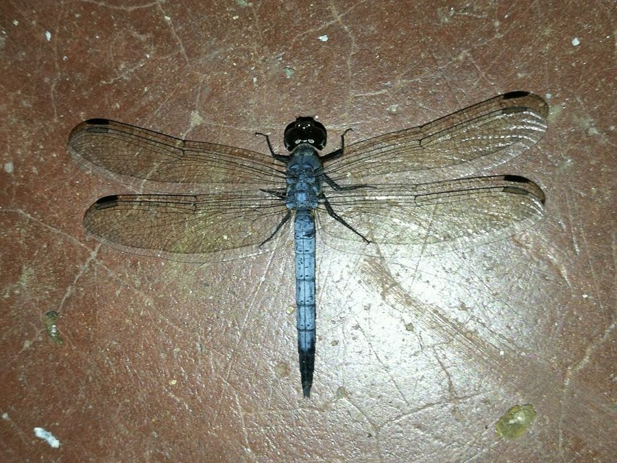

लिटिल ब्लू मार्श हॉकLittle Blue Marsh Hawk
Brachydiplax sobrina · Libellulidae · INS-0151

- Scientific name वैज्ञानिक नाम
- Brachydiplax sobrina (Rambur, 1842)
- Family कुल
- Libellulidae
- Hindi हिंदी
- लिटिल ब्लू मार्श हॉक
- Local names स्थानीय नाम
- little blue marsh hawk, hawk
- Status here यहाँ की स्थिति
- native
- Movement आवागमन
- Resident, here all year
- Known from कहाँ दर्ज
- Others have published records from the wider Awadh–Purvanchal plain, none yet from Basti–Ayodhya अवध–पूर्वांचल से दूसरों के प्रकाशित अभिलेख, बस्ती–अयोध्या से अभी नहीं
- IUCN IUCN
- not evaluated
- Review समीक्षा
- audited and independently read
When to look कब देखें
Present all year. साल भर मौजूद।
Uses and possibilities उपयोग और संभावनाएँ
Drawn from the documented uses in the profile below, where each is labelled traditional, current or a research lead. All uses →
Tell it apart from इनसे अलग पहचानें
लिटिल ब्लू मार्श हॉक / Little Blue Marsh Hawk
Brachydiplax sobrina (Rambur, 1842) — Libellulidae
लिटिल ब्लू मार्श हॉक — हमारे दलदली इलाकों, तालाबों, खेतों की नालियों और दूसरे पानी के गड्ढों में देखी जाने वाली एक छोटी नीली व्याधपतंग है। नर का शरीर गहरा नीला, पंख पारदर्शी, और इसकी उड़ान बहुत तेजी से झटकेदार होती है। यह पानी के पास बैठी चीजों पर बैठती है और अपने इलाके को बेहद आक्रामक तरीके से बचाती है। छोटे कीड़े, मच्छर, और अन्य पतंगों को खाती है। बारिश के दिनों में इसकी तादाद सबसे ज़्यादा होती है।
Quick Identification त्वरित पहचान
| Feature | Description |
|---|---|
| Size | Small dragonfly; body length 28–32 mm; wingspan 40–50 mm |
| Male Colour | Entirely dark blue or steel blue; abdomen slightly pruinescent (powdery bloom) |
| Female Colour | Dull brown or olive-green; lacks the blue coloration |
| Wings | Transparent; sometimes faintly amber-tinged at base in males |
| Behaviour | Perches upright on weeds, grass stems, and low twigs; extremely territorial; quick darting flight |
Field tip: A small, uniformly dark blue dragonfly perching upright on marsh vegetation or low grass stems near water. Males are highly aggressive and chase away other dragonflies from their territory.
हिंदी — कैसे पहचानें: छोटी, गहरी नीली व्याधपतंग। तालाब की घास और नरकुल पर खड़ी होती है। नर का पूरा शरीर नीला। मादा हरी-भूरी होती है।
Morphology आकारिकी
Biometrics (typical measurements for northern Indian plains):
| Measurement | Range |
|---|---|
| Body length | 28–32 mm |
| Hindwing length | 18–22 mm |
| Wing span | 40–50 mm |
Adult description: The male has a dark steel-blue or cobalt-blue thorax and abdomen, often with a characteristic pruinescence (powdery bloom) giving it a matt finish. The head is blue with large compound eyes. Wings are transparent with dark veins and sometimes faintly amber-tinged basal patches. The female is much duller, with a yellowish-brown to olive-green body, and similarly transparent wings. Both sexes have a compact body form typical of libellulids adapted to marsh habitats.
Vocalisations
Odonates do not produce true vocalisations.
- Sound production: Wing-whirring sounds during territorial disputes and courtship are produced by rapid wingbeats at approximately 30–35 Hz.
Behaviour & Ecology व्यवहार और पारिस्थितिकी
Brachydiplax sobrina is a small, highly territorial libellulid that perches low on marsh vegetation. Males are extremely aggressive and readily chase away intruders, including larger dragonfly species. They perch upright and sally out to catch prey, then return to their chosen spot. This species is a generalist predator of small flying insects.
The species is common in shallow, stagnant, and slightly vegetated water bodies including rice paddies, marshes, drainage channels, and ponds. It is present year-round in the Indian subcontinent but shows peak abundance and breeding activity during the monsoon and post-monsoon seasons (July–November) when water bodies are full and vegetation is abundant.
Larval (Naiad) Stage
The naiad is aquatic and predatory:
- Body form: Stout, compact, mud-brown to greenish-brown; final-instar naiad reaches approximately 12–15 mm in body length.
- Habitat: Lives in mud and detritus at the bottom of shallow water bodies, among plant roots and decaying vegetation.
- Duration: Larval development typically takes 4–6 weeks under warm conditions.
- Emergence: Naiads climb onto emergent plants or twigs at night to emerge, with peak emergence during monsoon months.
Life Cycle / Phenology जीवन चक्र
| Stage / Season | Event |
|---|---|
| Egg | Laid by female dipping abdomen onto water surface; sticky and sinking |
| Naiad (instar 1–10) | Aquatic; predatory on small aquatic invertebrates |
| Naiad duration | 4–6 weeks in warm season; longer in cooler months |
| Emergence | Peak July–September during monsoon; individuals emerge at night |
| Adult lifespan | 3–5 weeks; males emerging earlier than females |
| Breeding season | July–October; peak in August–September |
हिंदी: अंडे पानी में डाले जाते हैं, 4–6 हफ़्तों में निम्फ़ बड़े होते हैं, फिर निकलते हैं। गर्मी के मौसम में सबसे ज़्यादा।
Host Plants or Prey आहार
Prey (adults):
- Mosquitoes and midges (Diptera)
- Small moths and butterflies
- Leafhoppers and small flying insects
- Tiny flies and gnats
Prey (larvae):
- Mosquito larvae and pupae
- Small aquatic crustaceans (copepods, ostracods)
- Midge larvae (Chironomidae)
- Small aquatic insect nymphs
Predators / Natural Enemies शत्रु
- Birds: Insectivorous birds including drongos, rollers, and bee-eaters.
- Amphibians: Tree frogs and pond frogs.
- Insects: Larger dragonflies occasionally prey on adults; aquatic insects prey on naiads.
- Aquatic predators: Fish and large aquatic water bugs.
Agricultural / Human Relevance कृषि प्रासंगिकता
Pest suppression. This dragonfly is highly beneficial in rice-growing regions, where it preys heavily on mosquito larvae and small agricultural pests including leaf folders and stem borers. Being small and highly abundant in rice paddies during the monsoon, it serves as a natural biological control agent.
Today. Common in agricultural regions; populations are abundant wherever there are rice paddies and marshes, making it a regular sight in fields during monsoon months.
Expected Locally स्थानीय रूप से अपेक्षित
Not a field record. Written from published accounts for eastern Uttar Pradesh. No confirmed local sighting yet — if you have seen it, that is what the atlas needs.
अभी तक स्थानीय पुष्टि नहीं। यह विवरण प्रकाशित स्रोतों से है, किसी अवलोकन से नहीं।
Expected in marshes, rice paddies, and pond margins throughout eastern Uttar Pradesh during the monsoon season (July–October), with scattered individuals present year-round in stagnant water bodies. Males are highly territorial and to be expected perching on emergent marsh plants, low grass stems, and water-edge vegetation. This species is a generalist and does not require pristine waters, adapting readily to agricultural wetlands and even polluted channels.
Distribution वितरण
Global range: Widespread across South and Southeast Asia, including India, Sri Lanka, Myanmar, Thailand, and Indonesia.
In India: Distributed throughout the Indian peninsula and sub-Himalayan regions wherever suitable wetland habitats exist.
In Uttar Pradesh: Present state-wide in all wetland districts, particularly in rice-growing regions.
In Basti district / eastern UP: Expected in all rice paddies, marshes, and permanent ponds, with peak activity during the monsoon season.
Research Questions शोध प्रश्न
Anyone can investigate these | कोई भी इन प्रश्नों की जाँच कर सकता है
- How many individual Little Blue Marsh Hawks occupy a single rice paddy during peak monsoon? / एक धान के खेत में कितनी व्याधपतंगें होती हैं? — Count individuals in marked paddies; estimate territory size.
- Does this species' abundance correlate with mosquito larval density in rice paddies? — Compare dragonfly counts with mosquito surveys.
- What is the preferred perching height on marsh vegetation for males and females? — Measure heights of observed perches; compare by sex.
- How long does the territorial male remain at the same perch during daylight hours? — Record perching vs. flight time throughout the day.
- Can naiads of this species survive in rice paddy drains with high pesticide loads? — Compare emergence rates in sprayed vs. unsprayed paddies.
Similar Species मिलती-जुलती प्रजातियाँ
| Species | How to tell apart | हिंदी | |
|---|---|---|---|
| [[blue_dartlet\ | Blue Dartlet]] (Pseudagrion sp.) | Smaller body; more slender; perches differently (usually horizontal); different family | नीली तुच्छपतंग — पतली, अलग तरीके से बैठती है |
| [[wandering_glider\ | Wandering Glider]] (Pantala flavescens) | Much larger; yellow-golden body; continuous flyer; does not perch as frequently | भटकती व्याधपतंग — सोने का रंग, बड़ी |
| [[scarlet_skimmer\ | Scarlet Skimmer]] (Crocothemis servilia) | Larger; bright red (males) or brown (females); broader abdomen | सिंदूरी व्याधपतंग — लाल, बड़ी |
Field rule: Small, uniformly dark blue dragonfly, upright perching on low marsh vegetation or grass stems near water, with quick, darting, jerky flight and highly aggressive territorial behavior identifies the Little Blue Marsh Hawk.
Taxonomy & Classification वर्गीकरण
Original description. Described by Rambur in 1842 in Histoire naturelle des insectes Névroptères. Type locality is India. The genus Brachydiplax was established by Rambur to accommodate this and related small marsh dragonflies; the specific epithet sobrina is Latin for "cousin" or "related," possibly referring to its superficial similarity to other small libellulids.
Subspecies. Monotypic — no subspecies are currently recognised.
Family and order placement. Order Odonata, family Libellulidae. The Libellulidae are the largest dragonfly family and are characterized by their relatively small to medium size, usually upright perching posture, and generalist feeding ecology.
Phylogenetic notes. Brachydiplax sobrina is phylogenetically related to other Old World Brachydiplax species, with B. chalybea of Africa as a sister taxon.
IUCN status rationale. Listed as Least Concern (LC). Extremely abundant and adaptable across its range, with stable populations in suitable wetland habitats.
Photo Gallery फोटो गैलरी
No photos yet — add field photos to media/species/little_blue_marsh_hawk/ and run node scripts/sync_photos.js.
Wanted:
- Male perching on marsh vegetation (गहरी नीली नर व्याधपतंग)
- Female at rest (हरी-भूरी मादा)
- Territorial male in flight
- Naiad in water or emerging
References संदर्भ
- Rambur, P. (1842). Histoire naturelle des insectes Névroptères. Librairie Encyclopédique de Roret, Paris. [original description]
- Fraser, F.C. (1936). The Fauna of British India, including Ceylon and Burma. Odonata. Vol. 3. Taylor and Francis, London.
- Prasad, M. & Varshney, R.K. (1995). A checklist of the Odonata of India. Oriental Insects, 29(1): 385–428.
- Mitra, T.R. (2002). Geographical distribution of Odonata (Insecta) of Eastern India. Zoological Survey of India, Kolkata.
- Subramanian, K.A. (2005). Dragonflies and Damselflies of Peninsular India: A Photographic Guide. Vigyan Prasar and ATREE, Bangalore.
- IUCN SSC Odonata Specialist Group. (2024). Brachydiplax sobrina. IUCN Red List of Threatened Species. Ver. 2024.
- GBIF Occurrence Data — Brachydiplax sobrina, Asia (2010–2025). GBIF taxon key: 1427819.
Source file: species/fauna/insects/little_blue_marsh_hawk.md